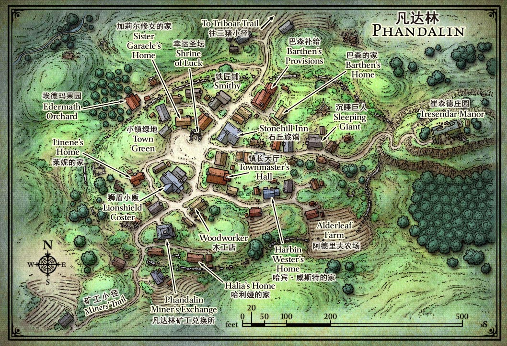

409故事集: 凡戴尔的失落矿坑 #05
DM
- SuikaXhq
登场角色
凯芙拉·斯托韦恩 (层层蹭蹭)
- 3级(EXP: 2370) 人类圣武士
艾尔莎 (熙瓜) 和她的动物伙伴噗噗
- 3级(EXP: 2210) 木精灵游侠
雅克 (lcs)
- 3级(EXP: 1680) 半身人游荡者
小林 (tx)
- 3级(EXP: 1920) 人类牧师
帕瓦 (zy)
- 3级(EXP: 2160) 龙裔战士
Adam Doom (hkh)
- 3级(EXP: 2140) 提夫林法师
Zed (rlh)
- 3级(EXP: 2290) 半兽人野蛮人
EP02 ~ 凡达林
崔森德庄园
.jpg)
在墓室休息片刻后，艾尔莎用铁钥匙打开了墓室东北边的门，发现这里是一间被铁栅栏隔开的牢房，南边的铁栅栏里关着一个农妇和两个小孩，三人嘴被堵上、手脚被捆住。然而，早已埋伏在门口的两个恶棍在艾尔莎开门的当下便将短剑直刺向她。
战斗：牢房
艾尔莎被刺中两剑，身负重伤，同伴们闻声立即赶来帮忙。杀死了一个恶霸后，另一个恶霸见状冲进南边的铁栅栏里，拎起被绑住的农妇，把短剑抵住农妇的喉咙喊道：“都停下！听着，如果不想她死的话就给我把门口让开！”
凯芙拉把巨剑慢慢倚到墙上，举起双手对恶霸说：“别激动，我们都先把武器放下来。”艾尔莎偷偷将这个恶霸标上了猎人印记，与帕瓦、Zed小声商量了一下，给这个挟持人质的红标帮恶霸让开了门口的路。恶霸死死地盯着四人，拖着农妇慢慢挪到了墓室中。看到墓室里正睡着的Adam，恶霸吓了一跳，恶狠狠地说：“怎么回事！你们到底有多少人！”凯芙拉努力安抚了恶霸，然后赶紧让Adam给他让开路。恶霸一路拖着农妇到了墓室南边的双开门旁，一脚踢开了双开门，然后扔下农妇径直逃走。听到双开门砰地一声关上后，凯芙拉、艾尔莎、帕瓦和Zed慢慢从牢房门口出来查看情况。
五人解救了农妇和她的两个孩子。这个叫做米尔娜·丹卓的农妇跪倒在众人面前，流着泪颤抖着地说道：“我都不知道怎么感谢您们才好，本来我们以为已经只剩下被这群恶棍卖为奴隶一条路了……”凯芙拉安慰了三个镇民，告诉他们现在可以安全地回到凡达林去。米尔娜告诉众人自己小时候曾在雷树镇居住，家里开草药店为生，在雷树镇被不死怪物袭击的时候，他们把传家宝——一条翡翠项链——埋在了货架地板下。米尔娜说：“我们身上现在都没有什么值钱的东西了，您们如果找到了我的传家宝，那就送给你们作为我的谢礼了。”众人感谢了她。为了防止路上可能出现的危险，Adam带着她和孩子们一同返回镇上。
里程碑：解救丹卓一家
经验奖励：每人100 EXP
艾尔莎推开了墓室南边的双开门，一道昏暗的长走廊呈现在四人面前。走廊两侧的墙上，每10尺都有一道装饰圆柱，地面上积了厚厚的灰，有一些地方显然被刚才的恶霸踩过。艾尔莎和帕瓦仔细观察了墙壁的支柱，凯芙拉抬头检查了天花板，但都没有发现异常。Zed往前探了几步，发现前方的地板并不平齐，喊来凯芙拉为他举盾挡住前方可能的危险。Zed抓住可疑的地板奋力抬起，一大块地砖被Zed掀起后顺势掉进了下方的陷坑之中，在底部碎裂成数块。四人从墓室助跑跳过了这个大陷坑。
四人围到走廊尽头的门旁，艾尔莎以她的原初意识，感应到前方似乎仍存在约6个类人生物。凯芙拉随即引导神力注入她的巨剑，Zed怒吼一声，踢开了木门。四人冲进一片地窖模样的房间，没有看到任何人。中间一个大水池占据了大部分空间，上方的一根水管正往池子中滴着水。两侧堆着许多木桶和板条箱，空气中弥漫着一股腌肉和麦酒的气味。
艾尔莎根据她留下的猎人印记，推测刚才的恶霸就在这附近。凯芙拉根据地窖西北边的木门和木桶的使用情况来看，认为很有可能门内藏着很多人。Zed立刻冲上前去，撞开了木门，随之而来的是3个恶霸的短剑……
战斗：地窖
3个恶霸突袭了Zed，短剑造成了一些皮肉伤。噗噗挤进房间，和帕瓦、凯芙拉一同解决了其中的2个恶霸。这时，女矮人格里斯塔带着2个恶霸从地窖西南边的暗门闯了进来，嘴里含糊不清地叫着：“给我去死吧！该死的冒险者们！”艾尔莎挨了格里斯塔的一箭，躲进了木桶堆里。三人和噗噗解决掉营房里的3个恶霸后，赶忙返回堵住了2个恶霸的来路。艾尔莎一箭将格里斯塔射成重伤，帕瓦也拿出长弓，偏离要害将格里斯塔射倒在地上。2个恶霸见格里斯塔昏死过去，妄图逃离，被追上来的凯芙拉和Zed制服。
经验奖励：凯芙拉、艾尔莎、帕瓦、Zed每人175 EXP
四人把女矮人捆住后，Zed抓住女矮人的头，摁到水池里再拎出来扇了两巴掌，让她清醒了过来。凯芙拉厉声问道：“说！你和红标帮是什么关系！”格里斯塔一脸蛮横地回答：“就是老子管的红标帮，怎么着！”凯芙拉见状，让Zed又扇了两巴掌，Zed又朝着格里斯塔的脸恶狠狠地吼了一嗓子。格里斯塔挨了一顿，老实了一点，交代了是黑蜘蛛雇他们来找冒险者们，防止他的什么计划被破坏，还派了3个熊地精过来。
格里斯塔说，2个月前黑蜘蛛送来一个用玻璃法杖的人类法师，要求看好他，让他“完成他该做的事”，红标帮就把他锁在了地窖西北角的房间里，每天给他带一些炼金材料。
凯芙拉让格里斯塔交代红标帮和镇长的关系，格里斯塔笑道：“镇长哈宾？那个胆小鬼三天两头被我们帮派的人收保护费，只要稍微吓一吓他，他就乖乖掏钱了！红标帮和他就是收钱和被收钱的关系，非常简单。”
凯芙拉继续问道：“那你知不知道潮音洞穴在哪？”格里斯塔冷笑了一声：“哼，要是我知道的话，早就发了大财了！”
格里斯塔还交代，他们之前把木匠丹卓“不小心”杀了，尸体扔给了地窖里一个独眼怪当作食物，把他的妻子儿女抓来准备当奴隶卖掉。
四人问完话，带着格里斯塔回到了地面上，向凡达林广场进发。
里程碑：抓获格里斯塔
经验奖励：每人100 EXP
广场

回到镇子广场，凯芙拉让格里斯塔跪在地上，向围观的镇民们说道：“大家看好了，这就是红标帮的头头格里斯塔，就在今天被我们绳之以法了！”围观的人群中传来一阵阵叫好声。镇长哈宾也闻讯赶来，走到冒险者们旁边说：“哎呀，您们真是太英勇了！我代表整个凡达林镇向你们表示真挚的感谢！”艾尔莎和帕瓦对哈宾说道：“道谢就免了，有没有什么实质性的奖励措施呢？”哈宾顿了一下，堆着笑说：“哈哈哈，当然当然，这样！我给各位冒险家们在镇子里挂上横幅，写上各位的丰功伟绩，您们看怎么样？”众人听罢便再无理睬这位镇长。
修达和刚从地窖中返回的伊阿诺也从石丘旅馆赶来。修达与冒险者们一一握了手，并表示他们为领主同盟在当地的法制建设做出了巨大贡献，他正在向上级汇报、申请一笔钱作为各位的报酬。伊阿诺同样感谢了冒险者们，说道：“实在是非常感谢你们把我从红标帮的大本营里救了出来，”伊阿诺从腰包里拿出一大袋金币（100gp），“我以个人名义向你们预先垫付一部分报酬，希望你们能够收下！”众人便高兴地接过了这个沉重的袋子，感谢了伊阿诺。
幸运圣坛
与镇长哈宾的聊天中，众人得知广场上幸运圣坛的加莉尔修女那里提供一些简单的医疗服务。大家让镇民们散去后便来到了这一处由废墟就地取材搭建的简易神庙中。小林正坐在木长凳上与精灵加莉尔聊着天，讲述着他们众人追捕逃犯、剿灭哥布林巢穴的故事。凯芙拉观察了圣坛的布局与装饰，告诉同伴们这里供奉的是幸运与运气之女神泰摩拉。加莉尔为艾尔莎、凯芙拉简单擦拭清洗了伤口、涂上草药膏，并包扎了起来。
加莉尔听说了冒险者们的事迹，并由衷的敬佩他们。众人与加莉尔聊起了冒险经历，还听她介绍了圣坛里和竖琴手同盟的工作，听她讲述了她的日常生活。艾尔莎问起加莉尔受伤的事情，加莉尔显出忧郁的神情，说道：“前几天，我去兔莓镇找一个叫做阿加莎的女妖。虽然我找到了她的住所，但她并没有回应我。在回来的路上，我被一群哥布林拦路抢劫，逃跑的时候被他们刺中了。”加莉尔说着撩开自己长袍的袖子，向众人展示了手臂上带着些许血污的绷带。帕瓦十分同情加莉尔，凯芙拉表示，他们可以帮助加莉尔去找那个阿加莎女妖。加莉尔听罢十分高兴，找出一个镶着宝石的银梳子，说道：“我的任务是去询问她关于传奇法师博哲托尔的法术书所在位置的情报，如果各位愿意替我前往的话，我为阿加莎准备的这份见面礼也一并交给你们。”加莉尔将梳子递给凯芙拉，“阿加莎的住所就在兔莓镇的西北方向5里左右，有一条明显的小路通向森林，你们到了那里自然就能发现。她十分爱慕虚荣，你们一定要多多奉承她，千万不要挑衅，万一把她惹恼可就难办了。”众人接过梳子，对加莉尔的建议表示了赞同。
狮盾小贩
道别加莉尔和打算与她继续聊天的小林后，众人打算前去狮盾小贩处更新一下装备。老板莱妮·灰风热情地接待了冒险者们，大手一挥：“各位快请进！在我这里买装备只收各位半价！”凯芙拉挑选了一把称手的斧枪，Zed则把从红标帮窝点里搬来的武器都卖了出去。
凡达林矿工兑换所
冒险者们走到镇子的南边，来到了这个传说中红标帮不敢靠近的矿工兑换所。下午的兑换所挤满了背着矿石和镐子、带着矿工帽的人们，会长哈利娅·桑顿正在柜台前鉴定、记录着矿工们带来的东西。众人推门进入，在长队尾排上了队。
轮到冒险者们时，哈利娅赞扬了一番，并对她因太忙未能前去广场表示抱歉。凯芙拉和艾尔莎将他们找到的宝石都摆在桌上，请哈利娅鉴定估价。哈利娅一边拿着放大镜对宝石仔细地检查，一边回答着众人的问题。凯芙拉得知，当时红标帮越来越肆意妄为，到处征收商人的保护费，闯进兑换所要求哈利娅交钱；哈利娅则带着几个伙计，将红标帮的恶棍们揍了一顿，赶了出去。哈利娅说她并不清楚凯芙拉所说的克拉摩城堡在什么地方，不过她对冒险者是如何扫除红标帮的十分感兴趣。哈利娅向冒险者们了解到黑蜘蛛给了红标帮一些信件，并紧接着询问信件的去向。凯芙拉说它们还在崔森德庄园的地窖里，若哈利娅想要的话可以自己去拿，艾尔莎对哈利娅关于红标帮如此急切的心情感到了一丝诧异。哈利娅鉴定了众人倒出的所有宝石，并支付了收购费用，提议将冒险者们登记进兑换所的会员名单中。哈利娅说，鉴于各位的英勇事迹，可以给众人提供兑换所免费的寄存、鉴定等服务。众人感谢了哈利娅，并登记了各自的名字。
埃德玛果园
众人来到了这一据说曾经是冒险者之人居住的地方。沿着向上的小径一路走到苹果园旁，一个有着银色长发的半精灵正背着竹筐修剪着苹果树的旁枝。看到冒险者们走近，他放下了手中的活，走过来迎接众人。
互相自我介绍后，这个叫做达朗·埃德玛的半精灵请大伙到屋子里坐坐。达朗感谢冒险者们为镇子上的人们出了这口恶气，消灭了红标帮。紧接着，达朗提到镇子附近也有不太平的事情，作为一个前冒险者他无法坐视不管。凯芙拉询问了他详细的情况，原来达朗听说有人发掘出了一处叫做古枭井的远古废墟，这里曾是魔法帝国奈瑟瑞尔的瞭望塔，“有几个矿工说他们被一堆不死生物追着跑，我担心的是那里有可能还残留着什么危险的魔法。”达朗请求冒险者们前去察看情况，弄清楚不死生物的来历。众人欣然接受了这一请求。
石丘旅馆
冒险者们在傍晚回到了石丘旅馆，老板托布伦·石丘早就张罗准备了狂欢庆功宴，让冒险者们免费畅吃。众人拉着刚睡醒下楼的雅克一同吃肉喝酒，与镇民们互相庆祝红标帮的剿灭。
EP03 ~ 蜘蛛之网
前往雷树镇
第二天一早，凯芙拉、艾尔莎、帕瓦、Zed决定动身前往雷树镇，找到奎琳说的德鲁伊里多斯，向他询问克拉摩城堡的位置。
四人在草原上徒步向北行进，游侠艾尔莎负责了队伍的导航，其余人则负责警戒。太阳高照，天空中仅有星点的淡云，但时来的阵风使得赶路并没有那么炎热。行至傍晚，艾尔莎在花田扎下临时营地，搭起了篝火准备烤一些刚猎来的动物。然而，刚生起火不久，众人正在烤火时，一些蚊蝠也被光源吸引而来。
战斗：蚊蝠
12只蚊蝠从四个方向靠近了冒险者们。帕瓦使用绿龙吐息消灭了3只蚊蝠，艾尔莎用棘刺雹挡住了3只。噗噗抓住一只，将它拍到了地上，但被另外两只咬住吸血。Zed砍死了吸上来的一只蚊蝠，然后跑过去帮助噗噗。凯芙拉和过来帮忙的艾尔莎和帕瓦消灭了剩下的蚊蝠。
经验奖励：凯芙拉、艾尔莎、帕瓦、Zed每人75 EXP
雷树镇
经过两天的旅行，第四天一大早，四人走到了一条通往雷树镇的小径上。沿着杂草丛生的蜿蜒小路，四人看到了夹杂在灌木和藤蔓之中的雷树镇废墟。远处的小山坡上，一座部分坍塌的塔楼矗立在灌木和树木中，小路沿着曲折的路线通往山坡东面的一片宽阔广场。整个地方没有一点声音，而在即将进入废墟的不远处，一块较新的木制标识牌竖在路旁：“危险！植物怪物与僵尸！立刻折返！”